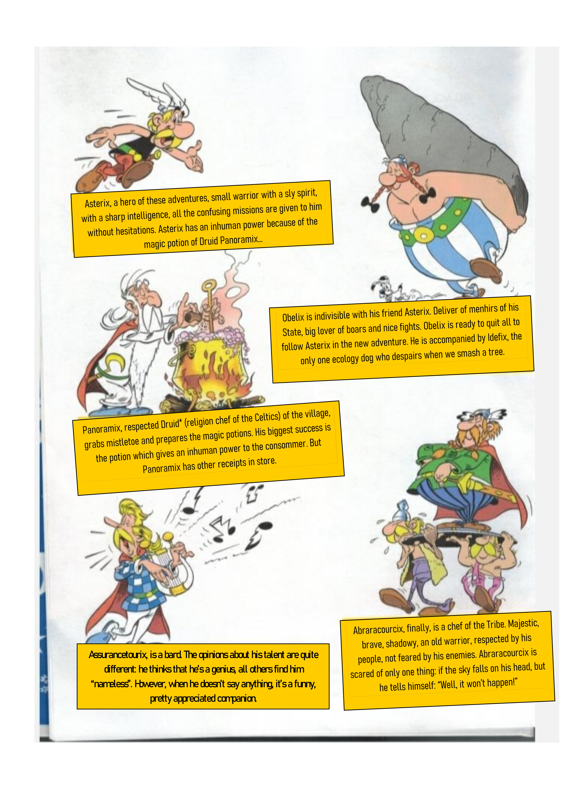
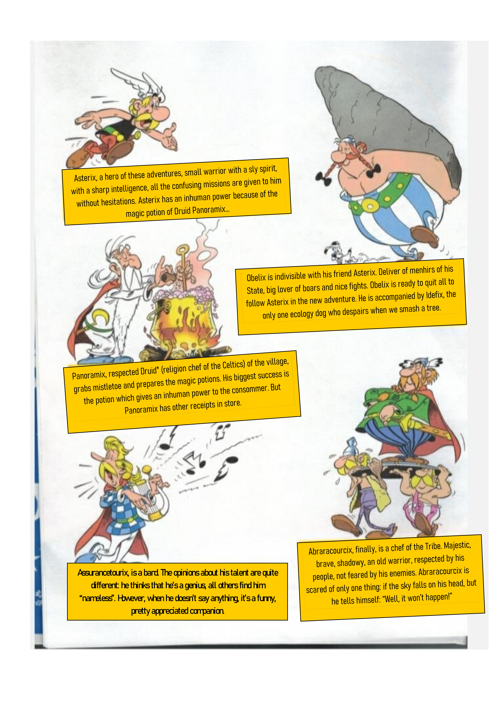
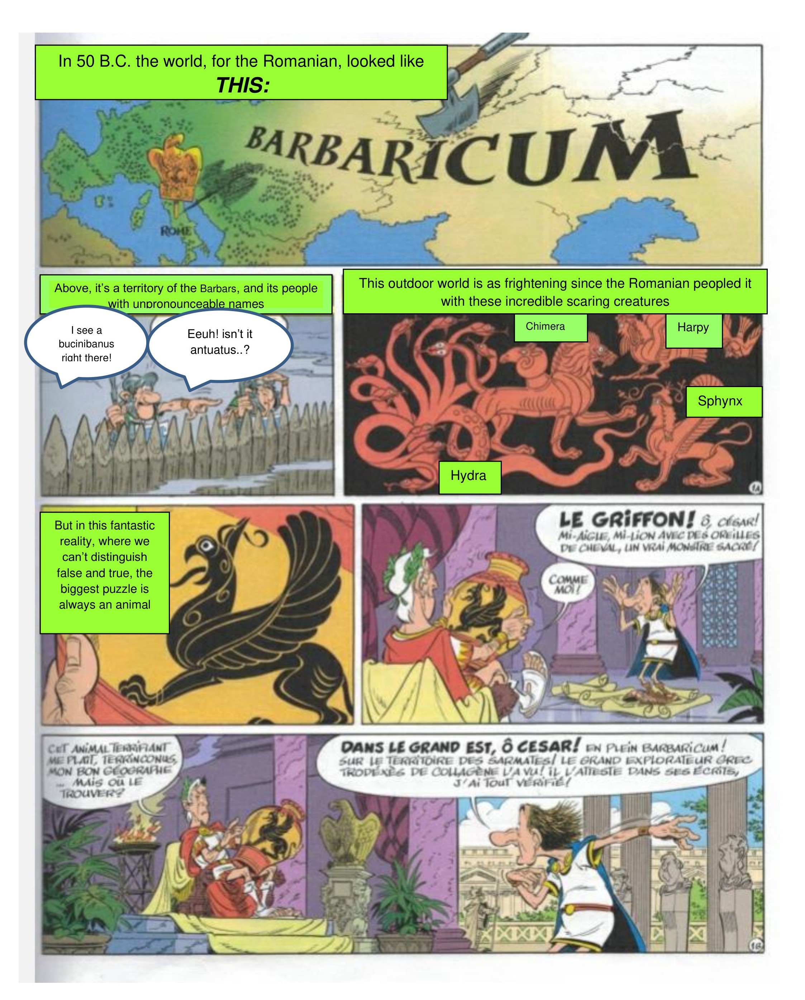
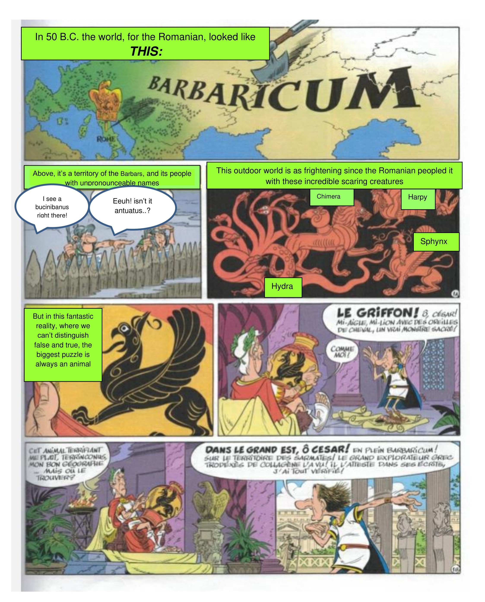

Formation
BUT Réseaux & Télécommunications
Institut Universitaire de Technologie de Clermont Auvergne situé à Aubiere, 63170
À partir de septembre 2025 jusqu'à présent
Le BUT Réseaux et Télécommunications est une formation en 3 ans, accessible après le baccalauréat. Cette formation vise à former des techniciens supérieurs compétents dans les domaines des réseaux informatiques, des télécommunications et de la cybersécurité.
Pour me spécialiser en cybersécurité, j'ai choisi d'intégrer le BUT Réseaux et Télécommunications à Aubière. Ce parcours me permettra d'apprendre à sécuriser des systèmes et des réseaux, tout en mettant la théorie en pratique grâce à des projets concrets. Cette formation correspond vraiment à mes aspirations et me prépare directement aux métiers de la cybersécurité, vers lesquels je souhaite me tourner pour la suite de ma carrière.
Baccalauréat général - Section Européenne
Lycée Saint-Jacques de Compostelle situé au Puy-en-Velay, 43000
À partir de septembre 2022 jusqu'à juin 2025
Le cursus au lycée Saint-Jacques de Compostelle au Puy-en-Velay permet de suivre un enseignement scientifique et technologique approfondi. En classe de terminale, le choix des spécialités NSI (Numérique et Sciences Informatiques) et Mathématiques permet d'acquérir des compétences solides en algorithmique, en programmation et en analyse logique.
J'ai choisi de suivre les spécialités NSI et Mathématiques car je suis passionnée par l'informatique et la manière dont le monde numérique évolue. Au-delà de la simple utilisation des outils, j'avais vraiment à cœur de comprendre ce qui se passe à l'intérieur : comment on programme, comment les réseaux communiquent et comment la logique mathématique lie le tout.
Pour approfondir mes connaissances scientifiques, j'ai complété mon cursus en terminale avec l'option Maths expertes. Ce choix m'a permis de renforcer ma rigueur d'analyse et d'aborder des concepts plus complexes, essentiels pour les métiers techniques du numérique.
Sur le plan linguistique, j'ai suivi pendant mes trois années de lycée la section DNL (Discipline Non Linguistique), où j'ai étudié l'Histoire et la Géographie en anglais ce qui m'a permis de valider mon baccalauréat avec la section européenne. En parallèle, j'ai suivi des cours de préparation à la certification Cambridge, ce qui m'a permis de valider un niveau B2 et de progresser vers le niveau C1. Cette solide base en anglais est pour moi un atout majeur pour comprendre la documentation technique et évoluer dans un secteur international.
Enfin, j'ai pratiqué la musique en option pendant mes trois ans de lycée. Cette pratique, cumulée à mon parcours au Conservatoire du Puy-en-Velay, m'a permis de cultiver ma passion pour le chant et la pratique de divers instruments de musique.
Site de lycée :
École de piano
École de musique n°12 de Dnipro, Ukraine
De septembre 2013 à juin 2023
Cette école a pour objectif d'enseigner la théorie musicale (solfège), ainsi que la pratique d'un ou plusieurs instruments au choix; dans mon cas, j'y ai étudié le piano
J'ai suivi cette formation musicale car elle m'a permis de développer ma sensibilité artistique, ma discipline et ma créativité. Le piano m'a appris la persévérance, la précision et la capacité d'exprimer des émotions à travers un instrument. Cette école offrait également des cours de solfège et des auditions et des concours qui m'ont aidée à gagner en confiance.
Formation IT
HackIt Studio, école d'informatique située à Dnipro, Ukraine
De septembre 2021 à juillet 2023
L'objectif est d'acquérir les bases essentielles du développement informatique. Cela passe par la création de sites web structurés et design (HTML/CSS/JavaScript), mais aussi par l'apprentissage de la logique algorithmique avec Python pour concevoir des programmes simples. La formation permet également de découvrir l'univers des logiciels et des applications mobiles à travers l'initiation au langage Java.
J'ai suivi ces cours pour découvrir la programmation, la logique algorithmique et développer mes premières compétences en informatique. Cette formation m'a confortée dans mon envie d'étudier l'informatique et m'a motivée à m'orienter plus tard vers le secteur de réseaux
 

.jpg) 
